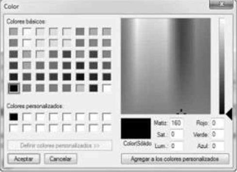
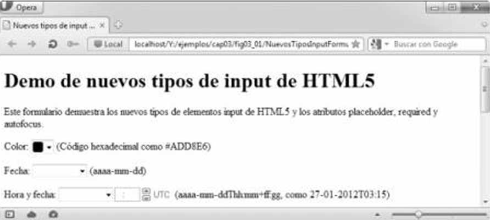
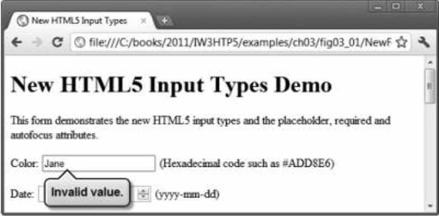
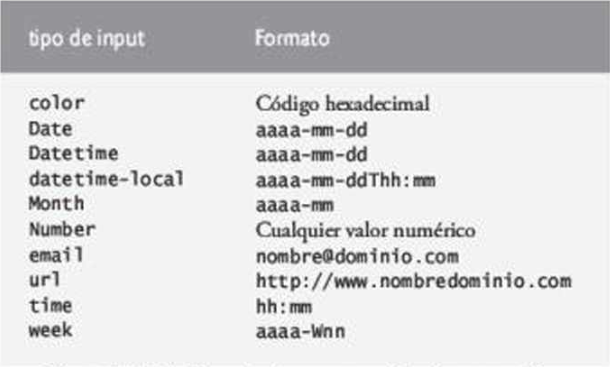

El tipo input color (figura 3.1, líneas 20
y 21) permite al usuario introducir un color. Al momento de escribir
este libro, algunos navegadores despliegan el tipo input color
como un campo de texto en donde el usuario
puede introducir un
código hexadecimal o el nombre de un color. Hay dos
navegadores, Chrome y Opera, que
muestran un
selector de color similar al cuadro de diálogo de
colores de Microsoft Windows, que se muestra en
la figura 3.2.
En el futuro, cuando haga clic en un elemento input color, es muy
probable que el resto de los
navegadores muestres un
selector de color también.

El atributo autofocus (figura 3.1, línea 20)
(un atributo opcional que puede usarse sólo en un elemento
input en un formulario) otorga de manera automática el enfoque
al elemento input, lo que permite al usuario
empezar a escribir
en ese momento de inmediato. La figura 3.3 muesta el uso del elemento
autofocus en el
elemento color (el primer elemento input en
nuestro formulario), como se despliega en Opera. No necesita
incluir autofocus en sus formularios.

Tradicionalmente ha sido difícil validar la entrada del usuario
, como asegurar que se introduzca una dirección
de correo
electrónico, URL, fecha u hora en el formato adecuado. Los
nuevos tipos input de HTML5 cuentan
con validación
automática del lado del cliente, con lo que se elimina la
necesidad de agregar código complicado
de JavaScript a
nuestras páginas Web para validar la entrada del usuario;
así se reduce la cantidad de datos inv&aactue;-
lidos que
se envían y, en consecuencia, disminuye el tráfico de
Internet entre el servidor y el cliente que se usa
para corregir
las entradas inválidas. De todas formas el servidor debe
validar toda la entrada del usuario.
Cuando un usuario introduce datos en un formulario
y luego lo envía (en este ejemplo, al hacer clic en el
botón Enviar), el navegador verifica de
inmediato los elemento de validación automática para
aseugrar que
los datos sean correctos. Por ejemplo, si un usuario
introudce un valor de color hexadecimal incorrecto al usar
un navegador que despliegue los elementos color como un campo de texto
(por ejemplo, Internet Explorer),
aparecerá una
anotación para señalar ese elemento e indicar que se
introdujo un valor incorrecto (figura 3.4).
La figura 3.5 lista cada uno de los nuevos tipos input de HTML5 y
muestra ejemplos de los formatos correctos
requeridos para que
cada tipo de datos sea válido.


Si desea pasar por alto la validación, puede agregar
el atributo formnovalidate al tipo input submtit en
la línea 101:
<input type = "submit" value =
"Enviar" formnovalidate>